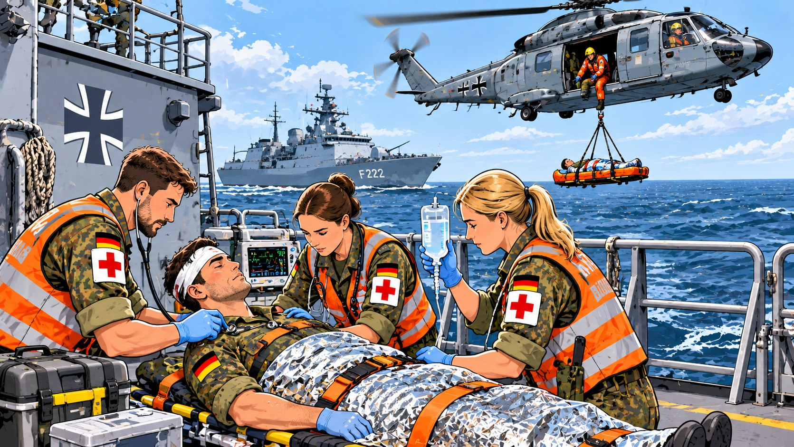

Militärische Nachrichten · A2–B119 – Rettungsübung auf hoher See
Nachrichtentext anzeigen
Die Deutsche Marine hat gemeinsam mit dem Sanitätsdienst der Bundeswehr eine mehrtägige Rettungsübung in der Nordsee durchgeführt. Bei der Übung wurde ein schwerer Unfall an Bord eines Marineschiffes simuliert. Das medizinische Personal musste mehrere Verletzte gleichzeitig versorgen. Einige Übungspatienten wurden anschließend mit einem Hubschrauber an Land transportiert. Die Behandlung von Verletzten auf hoher See stellt eine besondere Herausforderung dar, da der Platz an Bord begrenzt ist und ein Krankenhaus häufig weit entfernt liegt.